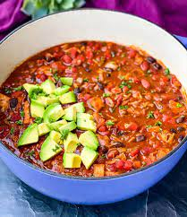

Turkey Chili Recipe

Here is a picture of some subpar turkey chili
Slow Cooker Turkey Chili made with black beans, kidney beans, corn and lots of spices. Hearty, thick, filling and full of flavor! The really is the BEST turkey chili made healthier and in the slow cooker!
Ingredients
- Lean Ground Turkey
- Onion
- Garlic
- Chicken Broth
- Tomato Sauce
- Fire Roasted Diced Tomatoes
- Black Beans
- Kidney Beans
- Frozen Corn
- Green Chilies
Steps
- Heat a large skillet with olive oil. Add in ground turkey and cook until browned and no longer pink.
- Add the turkey to the slow cooker along with the rest of the ingredients (except for toppings)
- Cook on low for 6 hours, or on high for 4 hours, until the soup is cooked through.
- Serve warm with the suggested toppings above!